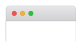
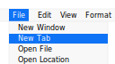
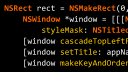
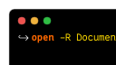

LyOS
Finesse of macOS. Freedom of FreeBSD.
We love macOS, but we’re not a fan of the ever-closing hardware and ecosystem. So, we are creating LyOS — an OS aimed to provide the finesse of macOS with the freedom of FreeBSD.
LyOS (Alfa) is an open-source operating system based on FreeBSD, CMU Mach, and Apple open-source code that aims to be compatible with macOS applications and has no hardware restrictions.
Project Goals
Features that you’d love.
We intend to bring many of the features you’ve come to love from macOS to LyOS such as clean design, global menus, and drag-and-drop installs.
-

Clean Design
-

Global Menus
-
Consistent Shortcuts
-
Simple Installs
-
Familiar Folders
-

Cocoa APIs
-

Nifty Commands
-
Superb Stability
Apps
We’ve got your apps covered.
Many FreeBSD ports and apps, Linux apps, and even trivial Darwin & macOS binaries can run on LyOS. And we’re actively working on improving it!
-
LyOS, Always
We're building familiar apps native to LyOS, packaged as portable .app bundles and built with our core technologies of Cocoa, Qt, and Mach. These are guaranteed to work and fit seamlessly into your desktop.
-
FreeBSD, Mostly
FreeBSD ports that support Wayland continue to work on LyOS right out of the box, or with minor changes.
-
Linux, Sometimes
Many Linux applications that support Wayland are expected to work with FreeBSD’s Linux emulation layer.
-
macOS, Maybe
Trivial macOS and Darwin applications may run directly on LyOS. This is an active area of work and research. AppKit-based source code may build and run natively.
Get Involved
Don’t be shy, come talk.
If this sounds like your dream system, please help us make it a reality! We’ve got a Discord, IRC, and Matrix. Chats are bridged. There's also a Telegram group (not currently bridged).
- 📖 Read the project wiki to find answers or troubleshoot.
- 🙋🏽♂️ Ask questions on the discussion forum.
- 💬 Hang out with us and others like you on Discord, or Telegram
Spotlight
Sometimes we get covered.
This article appeared on Microsoft. Microsoft recently wrote about
Tweets
Stay up-to date.
Follow us on Twitter to stay in the loop of freshest features and fixes we've pushed.